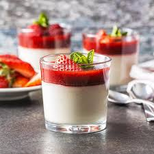

Giới thiệu về Panna Cotta

Panna cotta là một món tráng miệng truyền thống của Ý. Nó có nguồn gốc từ vùng Piedmont và được biết đến trên toàn thế giới với hương vị thơm ngon và hấp dẫn.
Panna cotta là một loại pudding làm từ sữa, đường và gelatin. Nó có cấu trúc mịn màng và kem, thường được phục vụ với nước sốt trái cây tươi hoặc caramel. Món tráng miệng này thường được làm trước và để trong tủ lạnh cho đến khi nó đông lại và cố định.